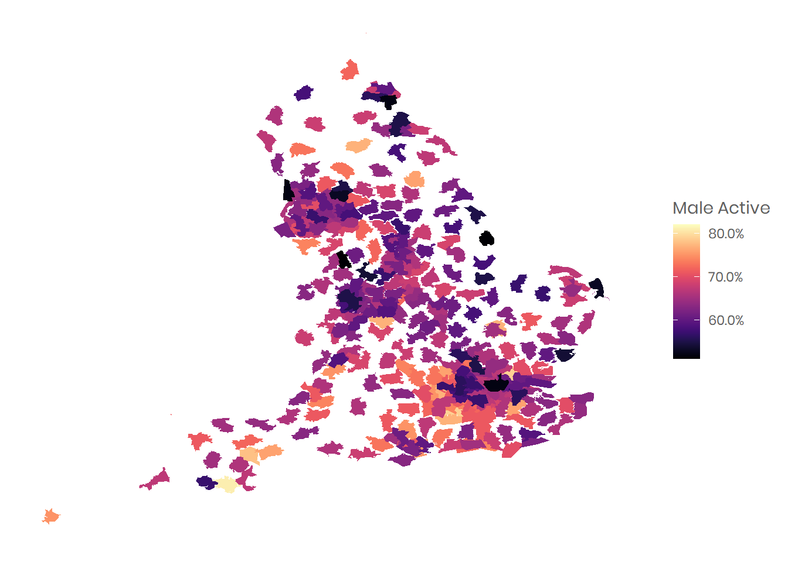
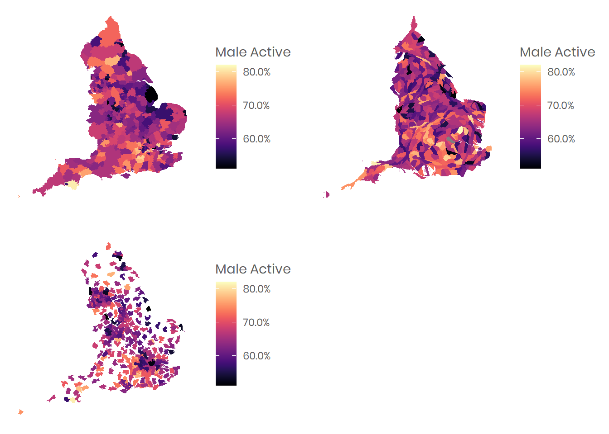

This tutorial will summarise an approach to creating a cartogram by using the cartogram package. This is very similar to creating a choropleth map - see the choropleth map tutorial for a ‘how to’ import a shapefile and join it with your data.
A cartogram is a map that is distorted spatially in order to convey information in a given variable.
There are some interesting examples available at the Worldmapper site
Here, we are going to read in spatial data slightly differently to the shapefile tutorial to demonstrate an alternative way, which enables us to do a quick plot of a cartogram. This approach uses the readOGR function from the rgdal package, and a variable from the Active Lives Survey to map.
# load packages for visuals
library(tidyverse) # multiple packages including ggplot
library(extrafont)# for Sport England house font
library(scales) # for percentage function
library(viridis) # for colours
library(rgdal) #for reading in the shapefile
#map1 <- readOGR(dsn = ".", layer = "Local_Authority_Districts_April_2019_Boundaries_UK_BUC")
# map without distortion
map1@data$id <- rownames(map1@data)
map1@data <- join(map1@data, df, by="lad19cd")
map.clean <- fortify(map1)
map.clean <- join(map.clean,map1@data, by="id")
map.clean <- map.clean[grep("E", map.clean$lad19cd),] # England only
map.clean <- map.clean[, !duplicated(colnames(map.clean))] # remove dupe cols
plot_1 <- ggplot() +
geom_polygon(data = map.clean, aes(x = long, y = lat, group = group, fill = Male.Active))+ #map.clean is a fortified dataframe created as per the choropleth tutorial
theme_minimal() +
theme(axis.title.x = element_blank(),axis.title.y = element_blank(),
text = element_text(family = "Poppins", color = "#5F5F5F"),
plot.title=element_text(size=14,family = "Poppins", face="bold", hjust = 0.5),
panel.grid = element_blank(),
axis.text = element_blank(),
axis.ticks.x = element_blank())+
scale_fill_viridis(option="magma", name = "Male Active",breaks = 0.1*0:9, labels = percent(0.1*0:9))
plot_1Using the cartogram package, we can plot a map using the spatial dataframe we have created.
GGPLOTTo ‘prettify’ it, we can convert it to a standard dataframe using fortify from the rgdal package, and then plot with ggplot.
# make into dataframe
map1.df <- fortify(test_cart)
map1.df <- join(map1.df,test_cart@data, by="id")
## remove dupe col
map1.df <- map1.df[, !duplicated(colnames(map1.df))] # clean any duplicated columns
plot_2 <- ggplot() +
geom_polygon(data = map1.df, aes(x = long, y = lat, group = group, fill = Male.Active))+
theme_minimal() +
theme(axis.title.x = element_blank(),axis.title.y = element_blank(),
text = element_text(family = "Poppins", color = "#5F5F5F"),
plot.title=element_text(size=14,family = "Poppins", face="bold", hjust = 0.5),
panel.grid = element_blank(),
axis.text = element_blank(),
axis.ticks.x = element_blank())+
scale_fill_viridis(option="magma", name = "Male Active",breaks = 0.1*0:9, labels = percent(0.1*0:9))
plot_2GGPLOTWe can also make a non-contiguous cartogram (a version of a cartogram where the polygon features are separated from their neighbours).
test_cart.ncont <- cartogram_ncont(map1, "Male.Active", k = 10) #k = factor expansion for the unit with the greater value
# make into dataframe
map2.df <- fortify(test_cart.ncont)
map2.df <- join(map2.df,test_cart.ncont@data, by="id")
## remove dupe col
map2.df <- map2.df[, !duplicated(colnames(map2.df))]
plot_3 <- ggplot() +
geom_polygon(data = map2.df, aes(x = long, y = lat, group = group, fill = Male.Active))+
theme_minimal() +
theme(axis.title.x = element_blank(),axis.title.y = element_blank(),
text = element_text(family = "Poppins", color = "#5F5F5F"),
plot.title=element_text(size=14,family = "Poppins", face="bold", hjust = 0.5),
panel.grid = element_blank(),
axis.text = element_blank(),
axis.ticks.x = element_blank())+
scale_fill_viridis(option="magma", name = "Male Active",breaks = 0.1*0:9, labels = percent(0.1*0:9))
plot_3
